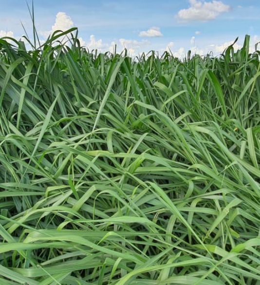

Apresenta alta capacidade de suporte devido à grande produtividade, permitindo alta produção de carne/ha. Tolera melhor o pisoteio e solos temporariamente úmidos que as demais brizanthas.
Benefícios e Considerações
Seus principais atributos positivos são
a alta produtividade, especialmente
de folhas, permitindo alta produção
de carne por área, a rápida rebrota e a
maior tolerância a áreas encharcadas
temporariamente que as outras Brizanthas.
Além disso, apresenta bom valor nutritivo
e alta capacidade de suporte (Pisoteio).
Como seu ciclo de florescimento é tardio,
garante um período maior de exploração
da pastagem.
Material deve ser bem manejado quanto
à altura de entrada e saída pois não tem a
mesma flexibilidade que o Marandu.
A capacidade de suporte varia entre 2,5 e
6,0 UA/ha nas águas e entre 1,4 e 2,2UA/
ha na seca, em solos de média fertilidade e
bem manejados.
Sob pastejo contínuo, deve ser manejado
a uma altura de 30 a 45cm. Sob pastejo
rotacionado as alturas indicadas para a
entrada e saída dos animais são 35cm e
15cm, respectivamente. Pode ser cultivada
praticamente em todo o país, em regiões
com bom regime de chuvas, sem invernos
rigorosos. Similares as da cv. Marandu,
tendo como vantagem a maior tolerância a
solos com má drenagem temporária.
Seu uso na agricultura em sistema de integração não vem sendo tão usual pela sua característica de crescimento e necessidade de maiores concentrações de herbicida para seu manejo, características essas que o favorece em sistemas de pastejo intensivo.
Informações Técnicas